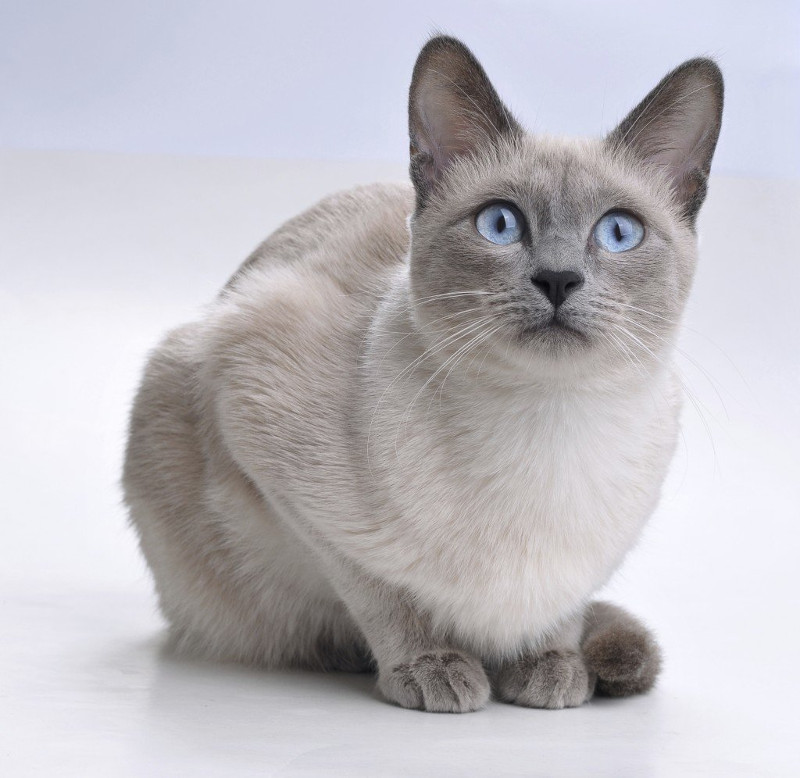
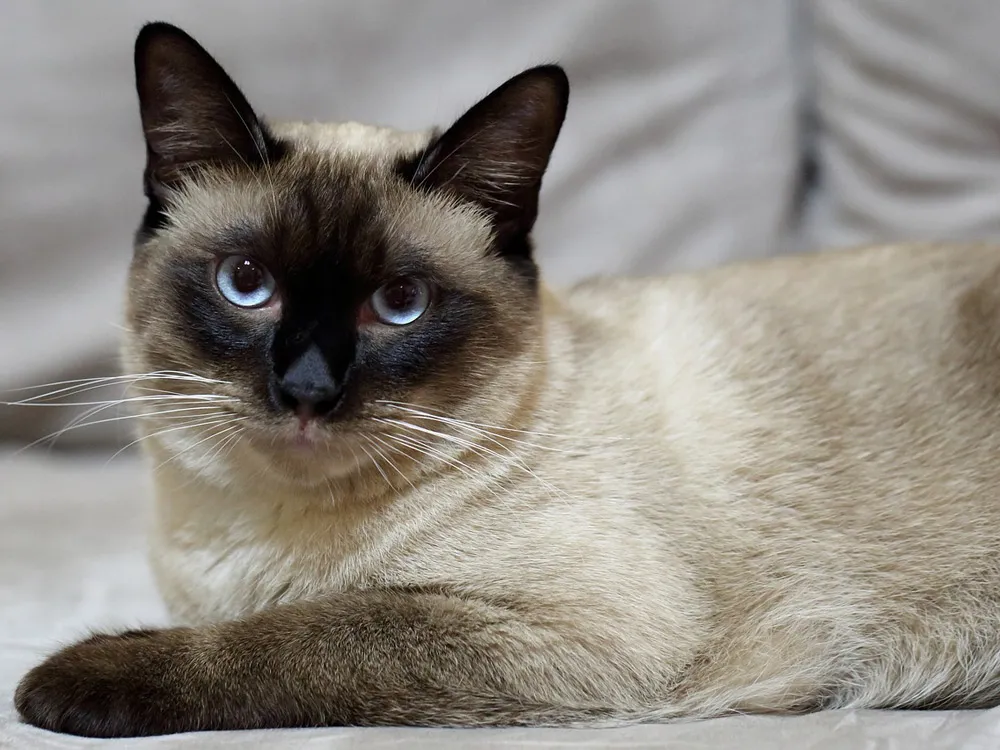

Felis silvetris catus
El gato doméstico es un mamífero carnívoro de la familia Felidae. Es una subespecie domesticada, por la convivencia con el ser humano, del gato montés.
El gato se comunica a través de vocalizaciones. Las más populares son su característico maullido y el ronroneo, pero puede aullar, gemir, gruñir y bufar. Además, adopta poses o expresiones que informan, a sus congéneres, sus enemigos o sus cuidadores, de su ánimo o sus intenciones.
Junto con el perro, es el animal doméstico más popular, como mascota, como ayuda en la lucha contra roedores o ambas cosas. En el 2017, la población mundial estimada de gatos estaba en seiscientos millones de felinos. En esta cifra se incluyeron gatos que son mascota, gatos callejeros (sin hogar) y gatos salvajes; sumando solo los gatos silvestres alrededor de 100 millones. El país considerado hasta esa fecha que más felinos tiene como mascota es Estados Unidos. Rusia contaba con aproximadamente 23 millones de gatos domésticos en 2021 convirtiéndose en el país europeo con mayor población de este tipo de felinos.


El gato siamés es un gato de tamaño mediano y cuerpo largo y flexible, que es grácil y elegante pero sin perder su aspecto musculoso. El cuerpo es equilibrado y atlético, las patas son esbeltas y las zarpas, pequeñas y ovaladas. Desde arriba, la cabeza recuerda a un triángulo que se estrecha en líneas rectas y termina en un hocico delgado. Las orejas son grandes y erguidas y están situadas de tal modo que siguen las líneas del triángulo. Los ojos tienen una forma oriental y se inclinan hacia la nariz. La cola es larga, estrecha y sin dobleces. El pelaje —corto, fino y ceñido al cuerpo— presenta un color principal pálido en todo el cuerpo, salvo en las marcas distales, mucho más oscuras. El color más oscuro se extiende únicamente a la zona del morro, las orejas, las patas y la cola, que son las partes más frías del cuerpo. Puede tener una amplia gama de colores. Independientemente de los colores y patrones del pelaje, el color de los ojos será siempre de un azul intenso brillante.
Probablemente el gato siamés sea tan conocido por su maullido contundente como por su aspecto clásico. La raza suele ser abierta, extrovertida y, a veces, muy ruidosa. Los siameses reclaman atención y necesitan sentirse parte de la familia. No es el gato ideal para una persona que trabaje todo el día fuera de casa, porque no le gusta quedarse solo. Puede que la solución sea tener un par de hermanos de camada. Los siameses son muy inteligentes y necesitan estar entretenidos. Es recomendable dejarles juguetes y postes de rascado para que se entretengan. También se les puede enseñar a ir a buscar juguetes que les hayamos lanzado.